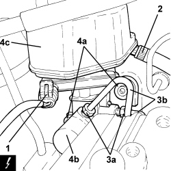
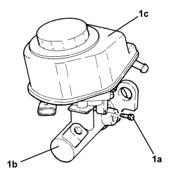

3330C12 MASTER CYLINDER (PUMP) - R.R. FOR RIGHT HAND DRIVE VERSIONS
- Path
- Procedures > 33 BRAKES > 3330 HYDRAULIC BRAKE SYSTEM > 3330C BRAKE PUMP, RESERVOIR AND LOAD PROPORTIONING VALVE > 3330C12 MASTER CYLINDER (PUMP) - R.R. FOR RIGHT HAND DRIVE VERSIONS
- Kind
- repair procedure (removal / refitting; the operation number is the code)
- Applies to
- engines: 2.2, 1.9 JTD 16v, 2.4 JTD 20v; all production periods
- Interactive page
- https://sloeber94.github.io/elrnDB-fCrm/en/#/194004021
Applies to: engines: 2.2, 1.9 JTD 16v, 2.4 JTD 20v; all production periods
 Removing
Removing
 Refitting
Refitting- Position the vehicle on a lift.
- Make sure that the ignition key is in the OFF position, then disconnect the battery terminal (-).
Op. 7055B54 UNDER ENGINE PROTECTION/GUARD - R.R.
- Replace the brake-clutch fluid reservoir plug using the tool.
Tool | Description | Function | Validity |
|---|---|---|---|
2000001400 | Plug | Brake/clutch fluid reservoir cap |
1. Disconnect the electrical connection from the brake fluid minimum warning light switch.
Description | Connector | |
|---|---|---|
1 | Brake fluid level sensor (switch) |
2. Loosen the band and disconnect the flexible pipe from the clutch reservoir to the master cylinder, reservoir side.
3. Undo the connectors (3a) and disconnect the pipes from the master cylinder to the electro-hydraulic control unit (1b), master cylinder side.
4. Undo the nuts (4a) and remove the master brake cylinder (4b) complete with reservoir (4c).

Applies to: engines: 2.2, 1.9 JTD 16v, 2.4 JTD 20v; all production periods
1. At the bench, undo the bolt (1a) and separate the master brake cylinder (1b) from the reservoir (1c).

Applies to: engines: 2.2, 1.9 JTD 16v, 2.4 JTD 20v; all production periods
Refitting
Removing- Replace the seals on the master brake cylinder.
- Assemble the master brake cylinder and the reservoir and tighten the bolt.
1. Refit the master brake cylinder (1a) complete with reservoir (1b) back in its housing and secure it tightening the nuts (1c) to the recommended torque.
Component | Fastening | dia | Value (daNm) | Validity |
|---|---|---|---|---|
Master cylinder brake (pump) | Nut (to replace) | - | (brake servo side) 2.1 - 2.9 |
2. Connect the pipes from the master cylinder to the electro-hydraulic control unit (2a), master cylinder side and tighten the connectors (2b) to the recommended torque.
Component | Fastening | dia | Value (daNm) | Validity |
|---|---|---|---|---|
Brake pipe connectors | Connector | M10/M12 | 1.4 ÷ 1.8 |
3. Connect the pipe from the reservoir to the clutch master cylinder, reservoir side and tighten the band.
4. Connect the electrical connection to the brake fluid minimum level warning light switch.
- Replace the tool with the brake-clutch fluid reservoir plug.
Tool | Description | Function | Validity |
|---|---|---|---|
2000001400 | Plug | Brake/clutch fluid reservoir cap |
Op. 0010T64 BRAKE AND/OR CLUTCH FLUID CHECK LEVEL AND TOP UP AS NECESSARY
Op. 0010T65 HYDRAULIC BRAKE SYSTEM - BLEED AIR
Op. 7055B54 UNDER ENGINE PROTECTION/GUARD - R.R.
- Connect the negative battery terminal.
- Remove the vehicle from the lift.
Topics linked from this page (4)
- 0010T64 BRAKE AND/OR CLUTCH FLUID CHECK LEVEL AND TOP UP AS NECESSARY
- 0010T65 HYDRAULIC BRAKE SYSTEM - BLEED AIR
- 7055B54 UNDER ENGINE PROTECTION/GUARD - R.R.
- K025 BRAKE FLUID LEVEL SENSOR (SWITCH)